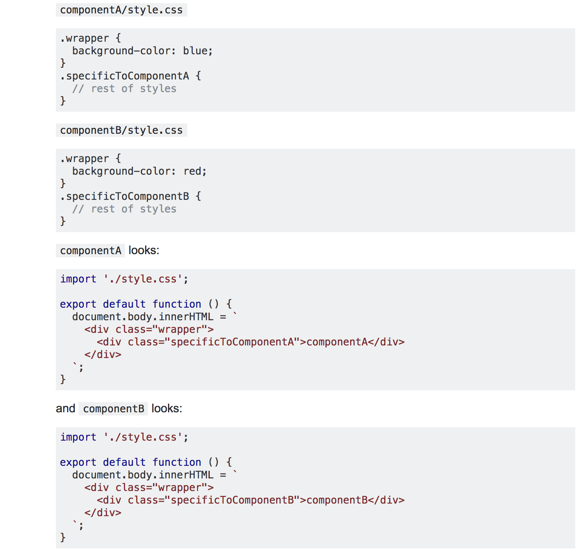

PostCss = CSS parser + AST tree + Plugins + Plugins ...+ ..+ Plugins + Stringifier
- Quite Heavy Words!! Lets go step by step
CSS parser & AST tree
- This results into...

- An Abstract Syntax Tree
- Plugins can now manipulate the nodes.
- At last Stringifier converts back to css.
Why i need postcss?
- Normal CSS or only SASS wont work?
1. Solve Global CSS Problem
- In Sass, we give our classes definite scope by nesting them!
Even Sass has tradeoffs !
- Specificity is a bad thing and forces the innocent devs to use..
- !important
- ID's rather than Classes
2. Use Future CSS, Today
- Courtesy of cssnext plugin for postcss.
3. Avoid errors in your CSS
- Courtesy of css stylelint plugin for postcss.
Conclusion from 'n' slides
With PostCss its all about my usecase i.e.
- Will be including features i require in my project through plugins thus following a modular approach.
- Not like SASS in which for just using mixins i would have to get all its features like @extend etc.
css-loader
- Usescss-modulesinternally.
- Will see next what problem it solves.
Problem !

- it's hard to tell if they are will be red or blue (it's hard to predict order of styles created by style-loader)
Solution !
- Replaces every local-scoped identifier with a global unique name.
extract-text-webpack-plugin
- Your styles are no longer inlined into the JS bundle.
- Caveats : Additonal HTTP requests.
postcss-cssnext
- PostCSS-cssnext is a PostCSS plugin that helps you to use the latest CSS syntax today.
- So you don’t need to wait for browser support.
- Some features....